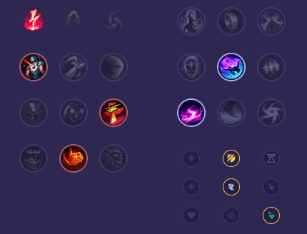

Starter: 2x Mikstura Zdrowia Core Bulid: Krwawa Pieśń Buty Prędkości Pancerz Umrzyka Full Bulid: Udręka Liandriego Naszyjnik Żelaznych Solari Odkupienie

Słaby przeciwko: - Nami - Senna - Maokai - Taric - Soraka - Pyke Dobry przeciwko: - Mel - Yummi - Morgana - Seraphine - Blitzcrank - Lulu